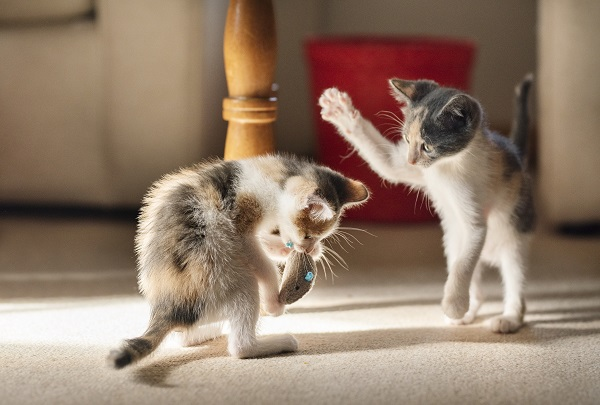
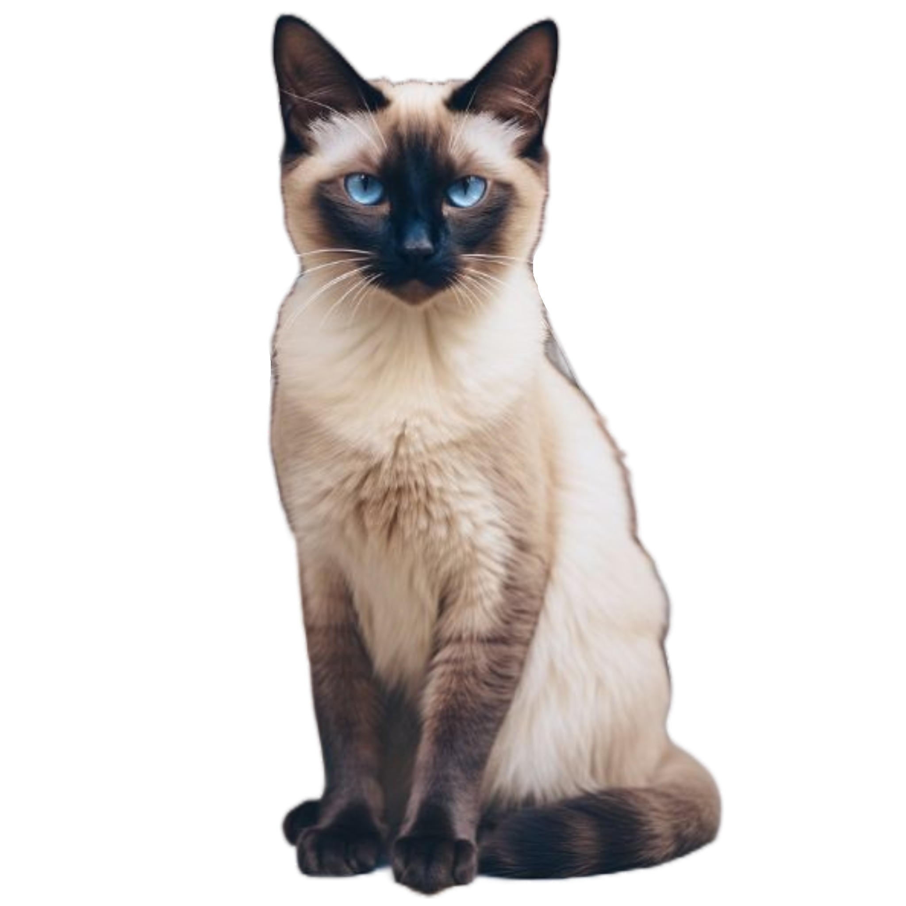

Nós do MeowAmigo, acreditamos que todos os gatos merecem um lar amoroso e seguro, somos todos apaixonados por conectar gatos adoráveis com famílias
que os amarão para sempre. Nós entendemos que adotar um gato é uma decisão importante e queremos tornar essa jornada o mais gratificante possível para você. Navegue pelo nosso site para conhecer os gatos adoráveis
que estão atualmente disponíveis para adoção, ou coloque aqueles que tiver para adoção. Cada perfil é cuidadosamente criado para que você possa aprender sobre a personalidade de cada gatinho, suas necessidades especiais e o tipo de lar que estão procurando. Estamos aqui para ajudar em cada passo do caminho. Desde encontrar o gato perfeito
que se encaixa no seu estilo de vida até oferecer um local para você colocar felinos que não pode cuidar para adoção.

Disponíveis

Bartolomeu
Idade 10 meses
Personalidade Um gato quieto e de certa forma "mandão", gosta das coisas do seu jeito e no seu tempo
, costuma ser pouco ativo sendo bastante confortável em estar sozinho no próprio canto, gostando de carinho apenas no seu tempo
Ficha médica Não possui qualquer histórico de doença, além de possuir todas as vacinas
Mia
Idade 8 meses
Personalidade Uma gata muito carinhosa e carente, odeia ficar sozinha e costuma adorar colo, nunca vai te deixar sozinha, porém prefere ficar recebendo carinho, dificilmente querendo brincar
Ficha médica Não possui qualquer histórico de doença, além de possuir todas as vacinas
Yassa
Idade 2 anos
Personalidade Uma gata bastante curiosa, adora descobrir cada canto e explorar tudo, desde lugares até pessoas,
tentando ver como elas reagem a tudo, desde brincadeiras até derrubar coisas de vez em quando. Seu gosto por carinho e brincadeiras é imprevisível, podendo variar muito
Ficha médica Não possui qualquer histórico de doença, além de possuir todas as vacinas
Minerva
Idade 4 meses
Personalidade Muito carente e "conversadeira", adora miar e se grudar nas pessoas, além de ser bastante desconfiada e elétrica, adorando ficar pulando de canto para contatos
, sendo difícil sentir que as coisas estão quietas quando ela esta por perto
Ficha médica Não possui qualquer histórico de doença
Diana
Idade 1 ano
Personalidade Uma gata de personalidade muito variável, costuma ser muito imprevisível, agindo de maneira diferente com cada pessoa em momentos diferentes, sendo a representação de uma surpresa constante em formato felino
Ficha médica Não possui qualquer histórico de doença, além de possuir todas as vacinas
Koda
Idade 3 anos
Personalidade Uma gata de personalidade levemente assustada, normalmente sendo muito receosa a tudo e todos principalmente no começo,
porém costuma ao adquirir certo afeto ser bastante carinhosa e brincalhona principalmente, dificilmente recusando brinquedos ou momentos mais agitados
Ficha médica Não possui qualquer histórico de doença, além de possuir todas as vacinas
Apollo
Idade R$35,00
Personalidade Um gato de personalidade hiperativa, adora brincar a maioria do dia
e dificilmente fica quieto, além de ter o costume de morder e arranhar, mas ainda muito carinhoso
com quem cria afeição adorando ficar grudado em quem gosta
Ficha médica Não possui qualquer histórico de doença, além de possuir todas as vacinas
Lev
Idade 4 anos
Personalidade UM gato de personalidade forte, costuma não gostar de muitas pessoas e dificilmente demonstra carinho sem ser por gestos simples
, porém costuma ser bastante possessivo e até meio agressivo, preferindo normalmente ficar em seu canto.
Ficha médica Não possui qualquer histórico de doença, além de possuir todas as vacinas